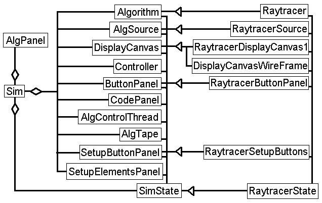

Raytracing and Other Algorithms
 The Sim class stores pointers to all the 'Main Classes', or
components that need to be attached to the applet.
The actual call to
create these components, is made in the SimState class. For each component,
Sim calls a method of SimState that creates and returns a pointer of that type.
For an algorithm to be implemented, it must extend SimState, and override
the methods that return components that it needs to change.
For instance, simulating the raytracer,
the Raytracer class extends the Algorithm class. The execute() method
is called when the user presses the render button in the ButtonPanel.
RaytracerState extends SimState, and overrides the call to create
and Algorithm class. Instead, a Raytracer class is created and returned.
The AlgPanel class has a choice box, allowing the user to select an
algorithm to simulate. When an algorithm is selected, the simulator removes
all components from the pref, setup, sim, and help panels. It then loads the class
extending SimState. It then calls each of the methods that return the
algorithm's components, and positions those components inside the 3dAA applet.
Adding the Raytracer Algorithm to the Simulator
To implement the raytracer algorithm, a choice is added to the AlgPanel
Choice box. When selected it will create a RaytracerState object. It
has several overridden methods, to create classes with added functionality,
and to provide the text of the help and about boxes.
The Raytracer class extends the Algorithm class. It implements the execute
method, which renders a scene. It also implements the record method, creating
a recording of an execution of the algorithm.
The Raytracer class also adds
some additional public methods: two default scenes can be created, and scene data
can be sent between the setup panel and the raytracer.
The RaytracerSource class has the text of the Raytracer source code.
The RaytracerDisplayCanvas1 class tracks any point clicked on this canvas.
The rendered image will be displayed here. If the user wishes to see how a pixel's
color was determined, the user can click on that pixel, and then record.
The DisplayCanvasWireFrame class adds the ability to display 3D images. This is
used to show the interaction between rays, and objects and lights in the scene.
3D is implemented using a simple four paramerter viewing system. The user specifies
a view point, a view plane distance, and a viewing direction. A view-up vector is
constant at (0,1,0). a right-handed cartesian coordinate system is used, with x
toward the right, y up, and z toward the viewer. The camera is oriented toward the
origin as default, but another point can be specified. This direction is the view-plane
normal.
The RaytracerButtonPanel class changes one of the button labels from
'execute' to 'render'.
The RaytracerSetupButtons class controls the creation of scene elements
in the raytracer, and stores them locally. The raytracer's default scene's
can be loaded, or the user can start with an empty scene. The user can
add or remove triangles, spheres, boxes, and lights. The user can also modify
the viewpoint. A scene can be saved, and the user can render, and record from
the sim panel.
Simulating Multiple Algorithms
3dAA can allow the user to select among several algorithms to simulate.
Attaching another algorithm involves modifying a choice box, and extending
a few classes.
Just getting something working
First, the AlgPanel class must be modified.
To get the Simulator working, two classes must be created. They must extend
SimState, and Algorithm.
Extending SimState, Algorithm2State should be created first.
To avoid namespace clashes, the classname of additional classes should begin with
the name of the algorithm. 'Algorithm2' should be replaced with the name of the algorithm.
SimState has one abstract methods, get_algorithm().
It returns an abstract classes. Abstract classes and classes with abstract
methods can not be instanciated. This is used to guarantee these classes and methods
are implemented before the system can run.
SimState.get_algorithm() returns an Algorithm.
An Algorithm2 class that extends Algorithm and implements the execute() method,
should be created. Execute is the only abstract method, so the only
method that needs to be overridden, to start. The execute() method is called when
the user presses the execute button in the ButtonPanel. The algorithm can use
the display canvases in the sim panel, and the text box in the control panel at
the top of the applet.
public class AlgPanel extends Panel{
private String[] alg={
"Raytracer",
"algorithm2 name"
};
public AlgPanel(){
add(new Label("algorithm:"));
for(int i=0; i<alg.length; i++){ c.addItem(alg[i]); }
c.select(0);
add(c);
c.addItemListener(
new ItemListener(){
public void itemStateChanged(ItemEvent e){
SimState tmp_state;
sim.draw_text(sim.get_state().get_msg_alg_selected());
switch(c.getSelectedIndex()){
default:
case 0: tmp_state= new RaytracerState(sim); break;
case 1: tmp_state= new Algorithm2State(sim); break;
}
sim.select_algorithm(tmp_state);
} } );
} }
public class Algorithm2State extends SimState{
public Algorithm2State(Sim s){ super(s); }
public Algorithm get_algorithm(){ return new Algorithm2(sim); }
}
public class Algorithm2 extends Algorithm{
public Algorithm2(Sim s){ super(s); }
public void execute(){
DisplayCanvas dc= sim.get_display1_canvas(); //get the left canvas
Graphics g= dc.get_graphics(); //get the canvas image buffer
...
algorithm code here
...
g.drawShape(); //draw on canvas buffer
g.drawText();
dc.repaint(); //copy canvas buffer to screen
...
g.setColor(Color.black); //erase canvas buffer
g.fillRect(0,0, buffer_d.width,buffer_d.height);
...
sim.draw_text("message"); //display a message in the Control Panel text box
}
}
At this point the applet will be runnable, and should display some output, indicating the results of it's execution. Compiling the Simulator requires one command, "javac Sim.java" all other classes are dependent on this one, so will be included.
The next feature to implement could be a code walkthrough. Two classes need to be extended here. First Algorithm2Source should extend AlgSource. The algorithm sourcecode should be divided into two sets of methods at this point: code that sets up data for input to the algorithm, and the algorithm code. Code that creates data for input to the algorithm should be placed at the end of the sourcecode text, or not included. This will allow the code to be easily modified from the setup panel later.
public class Algorithm2Source extends AlgSource{
public Algorithm2Source(){
i=0;code[i]="line1";
i=0;code[i]="line2";
i=0;code[i]="....";
static_i=i; //last line of code not related to input to algorithm
}//end of constructor
There is one more class to modify. Algorithm2.record() must be implemented. Essentially, the code from execute is repeated, with emmbedded recording calls. AlgTape maitains the sequence of AlgFrame objects passed to it. An AlgFrame consists of four values: the line of code simulated as executing, a String to be displayed in the Control Bar text box, and two lists of objects that know how to draw themselves, given a Graphics object. The objects are drawn in the right and left display canvases in the sim panel.
public class Algorithm2 extends Algorithm{
public Algorithm2(Sim s){ super(s); }
public void execute(){
...
algorithm code and calls to other methods
...
method_call();
}
private void method_call(){
x= method2();
...
}
private int method2(){
...
}
// --------- methods for recording ----------
private AlgTape recording;
public AlgTape record(){
recording= new AlgTape();
...
algorithm code and calls to other methods
recording.append(new AlgFrame(8, "text message", null, null));
...
rec_method_call();
recording.append(new AlgFrame(10, "text message", null, null));
}
private rec_method_call(){
x= method2(); //rec_method2() not called here, so that method isn't recorded.
recording.append(new AlgFrame(15, "x="+x, null, null));
}
}
Algorithm2State must override methods that return any extended classes, in this case AlgSource.
public class Algorithm2State extends SimState{
public Algorithm2State(Sim s){ super(s); }
public Algorithm get_algorithm(){ return new Algorithm2(sim); }
public AlgSource get_alg_source(){ return new Algorithm2Source(); }
}